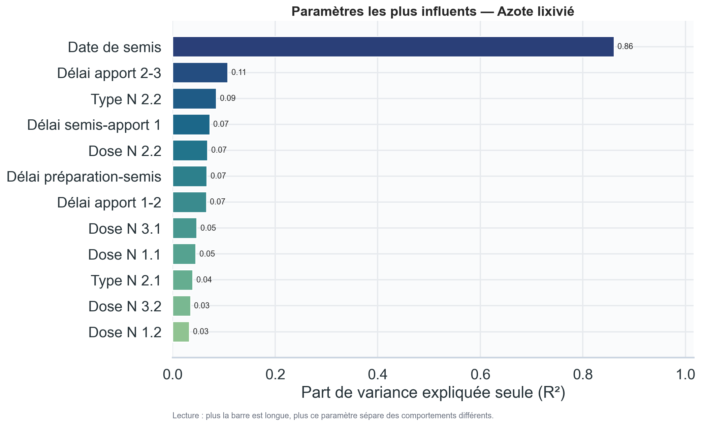
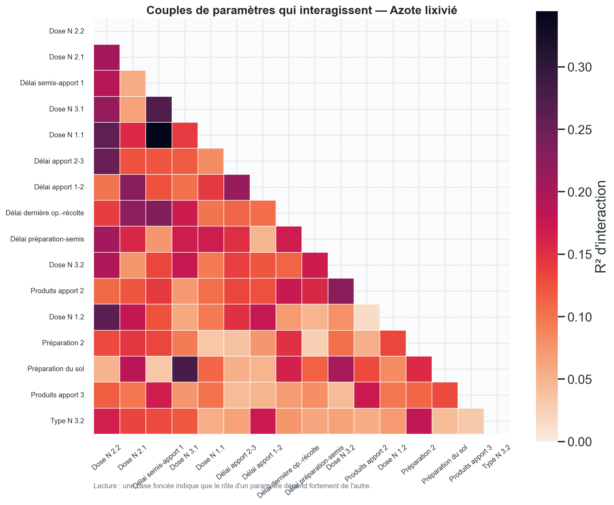
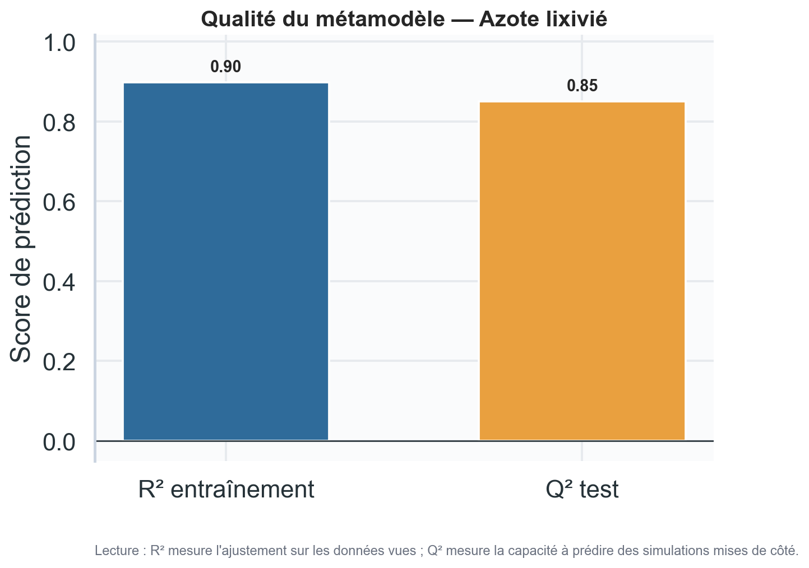
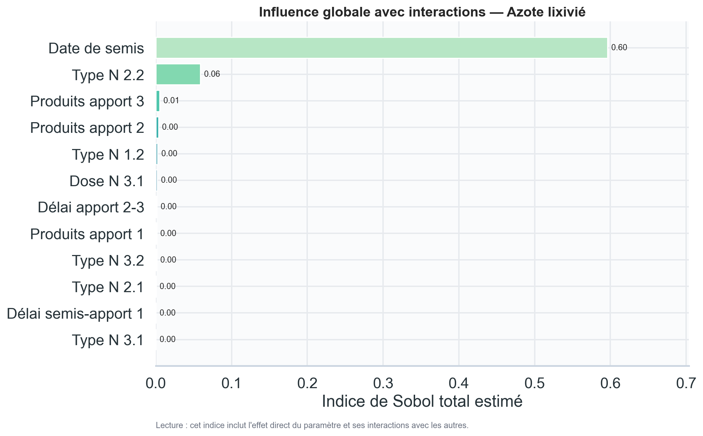
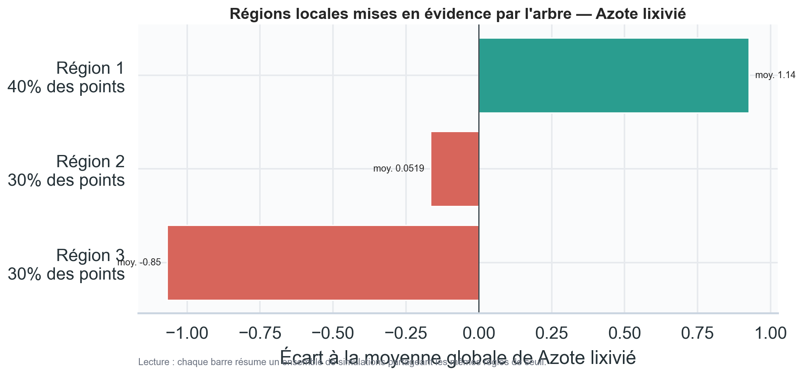
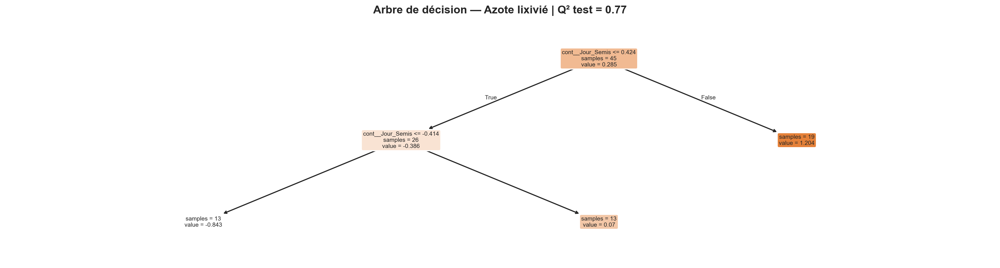

Azote lixivié (kg N/ha)
ANOVA à un facteur

Interactions à deux facteurs

Performance du métamodèle

Indices de Sobol total

Régions sensibles

Arbre de décision

Dataset : /tmp/maelia_ui_route_test/log_terrainSA/dataset_metamodel.csv





